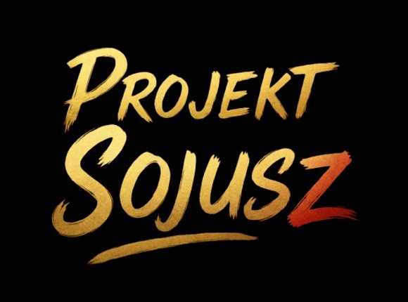
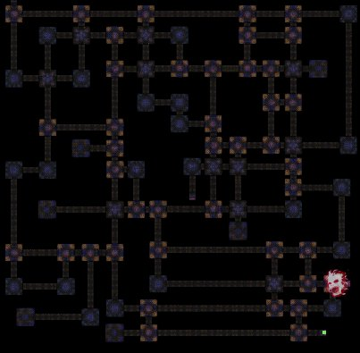

Platforma koordynacji gildi. Śledź respawny bossów, planuj ataki i dominuj na serwerze.
Interaktywna mapa z pinowaniem Generałów i globalnymi timerami respawnów.
DostępneŚledzenie respawnów metinów i bossów na wszystkich mapach serwera.
WkrótceLista sojuszniczych gildii, ich liderów i zasad współpracy.
WkrótceKliknij na Generała na mapie, aby oznaczyć jego zabicie. Zmiany są widoczne dla wszystkich w czasie rzeczywistym.
